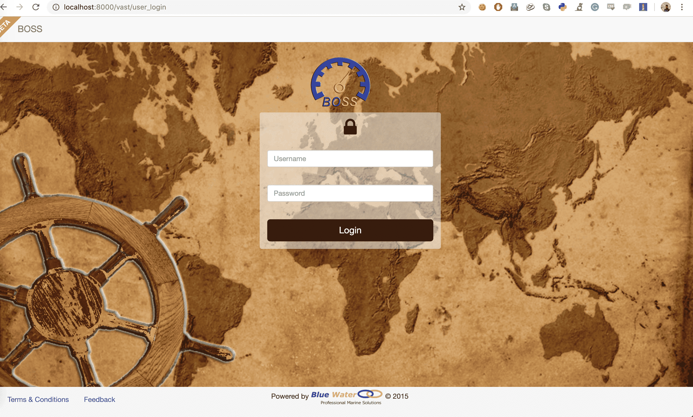

Installation¶
Following installation guide assumes a Unix based operating system. Make sure you have Python 2.7 installed. You will also need to install MySql Client 5.6.
Getting the code¶
Clone the root BOSS directory containing
manage.py, andVirtual_Arrivaldirectory.git clone https://github.com/paarthneekhara/BOSS_root
Download the data folder from here, unzip it and place the
Datadirectory insideBOSS_root.Inside the
BOSS_rootdirectory clonevast:git clone https://github.com/paarthneekhara/vast
The directory structure after these steps should look something like this:
BOSS_root/
|-Data/
│-vast/
|-Virtual_Arrival/
|-manage.py
- Next you will need to edit the
Virtual_Arrival/settings.pyandconftest.pyfor configuring mysql connection parameters of your machine.
Installing Dependencies¶
create a Python 2.7 virtual enviroment in
BOSS_rootas follows. If your default python version is 2.7, the following would work, other wise specify Python 2.7 path using-poption.virtualenv bossenv
Install all dependencies using
pip install -r requirements.txt
Running the server¶
If everything worked correctly, you should be run the server using:
python manage.py runserver
The following login screen should come up on accessing
http://localhost:8000/vast/user_login